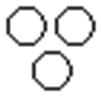
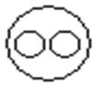
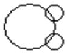
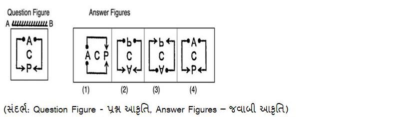
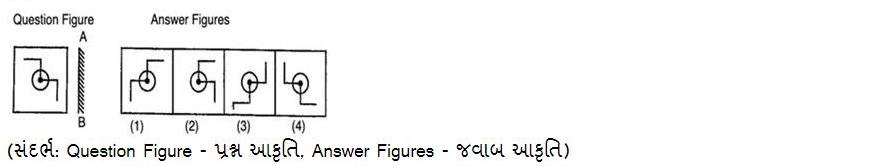
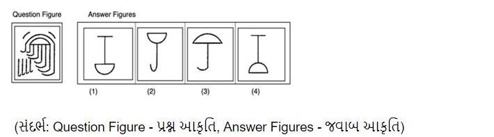
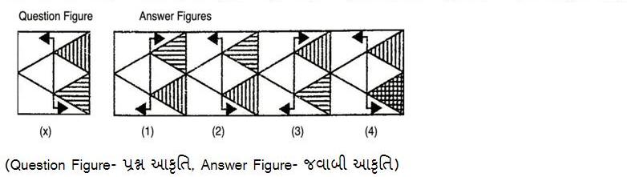
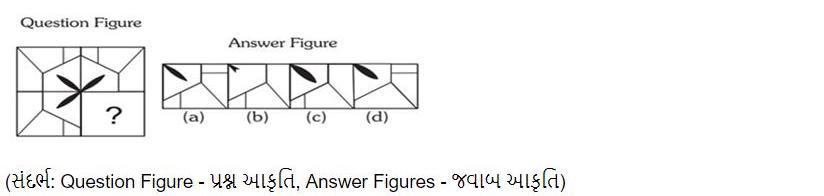
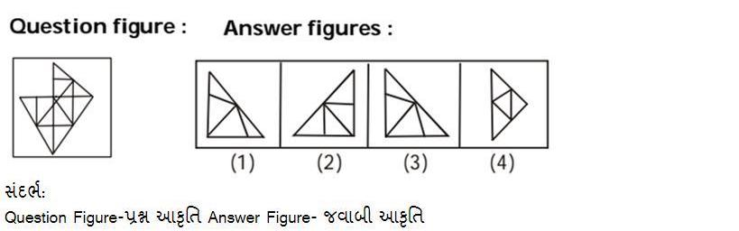
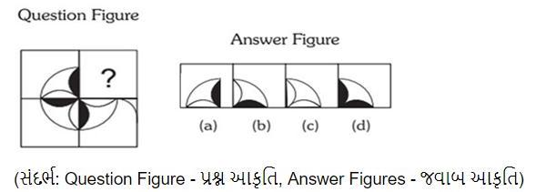

CCE Model Paper - 2 (Gujarati Medium)
Que: 1
જો 'A' નો અર્થ ' ગુણાકાર', 'B' નો અર્થ 'સરવાળો', 'C' નો અર્થ 'બાદબાકી' અને 'D' નો અર્થ "ભાગાકાર" હોય, તો નીચેની પદાવલીનું મૂલ્ય શું હશે?
$$6\text{A}6\text{C}3\text{B}38\text{D}2=?$$
Que: 2
જો 'M' એ '$\times$' સૂચવે છે, 'D' એ '$+$' સૂચવે છે, 'A' એ '$+$' સૂચવે છે, 'S' એ '$-$' સૂચવે છે, તો પછી નીચેની પદાવલિનું મૂલ્ય શું થશે?
$$4\text{S}8\text{D}2\text{A}12\text{M}2$$
Que: 3
જો 'A' નો અર્થ ' ગુણાકાર', 'B' નો અર્થ 'સરવાળો', 'C' નો અર્થ 'બાદબાકી' અને 'D' નો અર્થ "ભાગાકાર" હોય, તો નીચેની પદાવલીનું મૂલ્ય શું હશે?
$$3\text{A}8\text{C}8\text{B}55\text{D}5=?$$
Que: 4
જો '\$' નો અર્થ '$-$', '*' નો અર્થ '$+$', '@' નો અર્થ '$+$', '#' નો અર્થ ‘$\times$' થાય, તો નીચેની પદાવલીનું મૂલ્ય શું હશે?
$$7\#3*42@6\$9=?$$
Que: 5
જો P = '$+$', Q = '$-$', R = '$\times$' અને S = '$\div$' હોય, તો નીચેની પદાવલીનું મૂલ્ય શું હશે?
$$16\text{ R }2\text{ Q }20\text{ P }15\text{ S }3$$
Que: 6
નીચેના પ્રશ્નમાં 'પ્રશ્ન' અને તેની નીચે 1 અને 2 નંબરમાં દર્શાવેલા બે વિધાનોનો સમાવેશ થાય છે. ઉમેદવારોએ એ નક્કી કરવાનું છે કે વિધાનોમાં આપવામાં આવેલી માહિતી પ્રશ્નનો જવાબ આપવા માટે પર્યાપ્ત છે કે કેમ.
પ્રશ્ન: દિલ્હી અને અજમેર વચ્ચે સૌથી ટૂંકા માર્ગે કેટલું અંતર છે?
વિધાનો:
1. અજમેર મથુરાની ઉત્તરે 16 km છે જે મુંબઈથી 55 km દૂર છે.
2. આગ્રા બિકાનેરથી 63 km દૂર છે જે અજમેરથી 50 km દૂર છે.
1. અજમેર મથુરાની ઉત્તરે 16 km છે જે મુંબઈથી 55 km દૂર છે.
2. આગ્રા બિકાનેરથી 63 km દૂર છે જે અજમેરથી 50 km દૂર છે.
Que: 7
નીચેના પ્રશ્નમાં 'પ્રશ્ન' અને તેની નીચે 1 અને 2 નંબરમાં દર્શાવેલા બે વિધાનોનો સમાવેશ થાય છે. ઉમેદવારોએ એ નક્કી કરવાનું છે કે વિધાનોમાં આપવામાં આવેલી માહિતી પ્રશ્નનો જવાબ આપવા માટે પર્યાપ્ત છે કે કેમ.
પ્રશ્ન: 30 છોકરીઓની હરોળમાં પ્રિયા અને કાવ્યા વચ્ચે કેટલી છોકરીઓ છે?
વિધાનો:
1. પ્રિયા એ રાહુલથી 16 સ્થાન દૂર છે.
2. પ્રિયા એ ડાબા છેડેથી 12મા ક્રમે છે.
1. પ્રિયા એ રાહુલથી 16 સ્થાન દૂર છે.
2. પ્રિયા એ ડાબા છેડેથી 12મા ક્રમે છે.
Que: 8
માત્ર અવિભાજ્ય સંખ્યાઓ અને તેમના ક્રમના આધારે નીચેનામાંથી કઈ જોડી નીચે આપેલી પ્રસ્તુતિને સમાન છે?
$$181 : 191$$
Que: 9
નીચેનામાંથી કઈ જોડી ફક્ત ભાગાકાર પદ્ધતિના આધારે નીચે આપેલ પ્રસ્તુતિને સમાન છે?
$$36 : 722$$
Que: 10
નીચેનામાંથી કઈ જોડી ફક્ત આગલી અવિભાજ્ય સંખ્યા પદ્ધતિ દ્વારા ગુણાકાર કરેલ સંખ્યાના આધારે નીચે આપેલ પદાવલીને સમાન છે?
$$20 : 460$$
Que: 11
ફક્ત સંખ્યાઓના સરવાળા અને બાદબાકી પદ્ધતિના આધારે નીચે આપેલી પ્રસ્તુતિને સમાન છે?
$$998 : 25$$
Que: 12
નીચેનામાંથી કઈ જોડી નીચે આપેલી પ્રસ્તુતિને સમાન છે?
$$743 : 347$$
Que: 13
નીચેનામાંથી કઈ જોડી ફક્ત સંખ્યાઓના સરવાળાના આધારે નીચે આપેલી પ્રસ્તુતિને સમાન છે?
$$586 : 19$$
Que: 14
નીચેનું કોષ્ટક એક પરીક્ષામાં છ વિદ્યાર્થીઓએ છ જુદા જુદા વિષયોમાં મેળવેલા ગુણની ટકાવારી આપે છે. કૌંસમાં આપવામાં આવેલા નંબરો દરેક વિષયમાં મહત્તમ ગુણ આપે છે.
| વિદ્યાર્થી | જનરલ નોલેજ (100) | પ્રાચીન ઈતિહાસ (100) | મધ્યયુગીન ઈતિહાસ (100) | આધુનિક ઈતિહાસ (100) | પર્યાવરણ (100) | હિન્દી (100) |
|---|---|---|---|---|---|---|
| બ્રજેશ | 90 | 50 | 90 | 60 | 70 | 80 |
| મોહન | 100 | 80 | 80 | 40 | 80 | 70 |
| એલન | 90 | 60 | 70 | 70 | 90 | 70 |
| બોસ્કો | 80 | 65 | 80 | 80 | 60 | 60 |
| દીપક | 80 | 65 | 85 | 95 | 50 | 90 |
| પિયુષ | 70 | 75 | 65 | 85 | 40 | 60 |
ઉપરોક્ત કોષ્ટકના આધારે મોહને કયા વિષયમાં મહત્તમ ગુણ મેળવ્યા છે.
Que: 15
નીચેના કોષ્ટકનો અભ્યાસ કરો અને પ્રશ્નોના જવાબ આપો. કેટલાક વર્ષોમાં જુદાં જુદાં રાજ્યોમાંથી ગાયન સ્પર્ધામાં ઉપસ્થિત રહેલા અને લાયકાત ધરાવતા ગાયકોની સંખ્યા. App - ઉપસ્થિત. Qual – લાયક
| રાજ્ય | 1997 | 1998 | 1999 | 2000 | 2001 | |||||
|---|---|---|---|---|---|---|---|---|---|---|
| App. | Qual. | App. | Qual. | App. | Qual. | App. | Qual. | App. | Qual. | |
| બિહાર | 5200 | 720 | 8500 | 980 | 7400 | 850 | 6800 | 775 | 9500 | 1125 |
| ગુજરાત | 7500 | 840 | 9200 | 1050 | 8450 | 920 | 9200 | 980 | 8800 | 1020 |
| મહારાષ્ટ્ર | 6400 | 780 | 8800 | 1020 | 7800 | 890 | 8750 | 1010 | 9750 | 1250 |
| નાગાલેન્ડ | 8100 | 950 | 9500 | 1240 | 8700 | 980 | 9700 | 1200 | 8950 | 995 |
| પંજાબ | 7800 | 870 | 7600 | 940 | 9800 | 1350 | 7600 | 945 | 7990 | 885 |
આપેલા વર્ષો દરમિયાન નાગાલેન્ડ રાજ્યમાંથી ઉપસ્થિત રહેલા સરેરાશ ગાયકો કેટલા છે?
Que: 16
નીચેના કોષ્ટકનો અભ્યાસ કરો અને પ્રશ્નોના જવાબ આપો. એક પરીક્ષામાં ભાષા અને સંસ્કૃતિના પેપરમાં મળેલા ગુણના આધારે 100 વિદ્યાર્થીઓનું વર્ગીકરણ
| વિષય | 70 અને તેથી વધુ | 60 અને તેથી વધુ | 50 અને તેથી વધુ | 40 અને તેથી વધુ | 30 અને તેથી વધુ |
|---|---|---|---|---|---|
| ભાષા | 9 | 32 | 80 | 92 | 0 |
| સંસ્કૃતિ | 4 | 21 | 66 | 81 | 0 |
| સરેરાશ (એકંદર) | 7 | 27 | 73 | 87 | 0 |
ભાષામાં કટ-ઓફ માર્કસ તરીકે 70 સાથે પાસ થયેલા વિદ્યાર્થીઓની સંખ્યા અને સરેરાશ (એકંદર)માં કટ-ઓફ માર્કસ તરીકે 70 સાથે પાસ થયેલા વિદ્યાર્થીઓની સંખ્યા વચ્ચે શું તફાવત છે?
Que: 17
નીચેનું કોષ્ટક એક પરીક્ષામાં આઠ વિદ્યાર્થીઓએ છ જુદા જુદા વિષયોમાં મેળવેલા ગુણની ટકાવારી આપે છે. કૌંસમાં આપવામાં આવેલા નંબરો દરેક વિષયમાં મહત્તમ ગુણ આપે છે.
| વિદ્યાર્થી | બિઝનેસ (100) | ફાઈનાન્સ (100) | ગણિત (100) | મનોવિજ્ઞાન (100) | સમાજશાસ્ત્ર (100) | હિન્દી (100) |
|---|---|---|---|---|---|---|
| રાશિ | 45 | 99 | 39 | 88 | 35 | 74 |
| ઉમંગ | 70 | 49 | 89 | 49 | 88 | 86 |
| યોગિતા | 99 | 80 | 60 | 65 | 50 | 90 |
| માનવ | 65 | 80 | 76 | 38 | 96 | 09 |
| નીલમ | 80 | 78 | 99 | 45 | 49 | 83 |
| પ્રિયમ | 73 | 32 | 57 | 71 | 75 | 89 |
| રીયા | 95 | 95 | 40 | 87 | 99 | 94 |
| તરુણ | 99 | 88 | 79 | 89 | 69 | 49 |
ઉપરોક્ત કોષ્ટકના આધારે, રાશિએ ઉપરોક્ત ઉલ્લેખિત વિષયોમાંથી કયા વિષયમાં A- મેળવ્યો છે (A- એટલે કે જ્યારે વિદ્યાર્થીને 70 અને 80 ની વચ્ચે/સમાન ગુણ મળે છે)?
Que: 18
ફક્ત સરવાળા અને ગુણાકારની પ્રક્રિયાનો ઉપયોગ કરીને નીચે આપેલ શ્રેણીને તાર્કિક રીતે પૂર્ણ કરવા માટે પ્રશ્ન ચિહ્ન (?) ના સ્થાને શું આવશે?
$$2, 4, 8, 10, 20, ??$$
Que: 19
નીચે આપેલ શ્રેણીને તાર્કિક રીતે પૂર્ણ કરવા માટે પ્રશ્ન ચિહ્ન (?) ની જગ્યાએ શું આવશે?
$$50, 53, 50, 59, 50, ?$$
Que: 20
માત્ર સરવાળાની પ્રક્રિયાનો ઉપયોગ કરીને નીચે આપેલી શ્રેણીને તાર્કિક રીતે પૂર્ણ કરવા માટે પ્રશ્ન ચિહ્ન (?)ની જગ્યાએ શું આવશે?
$$5, 21, 37, 53, 69, ?$$
Que: 21
ફક્ત બાદબાકી અને સરવાળાની પ્રક્રિયાનો ઉપયોગ કરીને નીચે આપેલ શ્રેણીને તાર્કિક રીતે પૂર્ણ કરવા માટે પ્રશ્ન ચિહ્ન (?) ના સ્થાને શું આવશે?
$$11, 8, 17, 14, 23, ??$$
Que: 22
રવિના (પુરુષ) પિતાના સગા ભાઈના પિતાનો રવિ સાથે શું સંબંધ છે?
Que: 23
એક ફોટોગ્રાફ તરફ ઈશારો કરતા નરેન્દ્ર (પુરુષ) કહે છે કે ફોટોગ્રાફમાં દેખાતો માણસ તેના પિતાના સગા ભાઈનો પિતા છે. ફોટોગ્રાફમાં દેખાતો માણસ નરેન્દ્ર સાથે કયો સંબંધ ધરાવે છે?
Que: 24
A ના સગા ભાઈ(પુરુષ)ની માતાની એકમાત્ર પુત્રી સાથે A નો શું સંબંધ છે?
Que: 25
બંસી એ અંજુ કરતા ઉંમરમાં મોટી છે. અનલ એ બંસી કરતા મોટી છે. અર્શી પણ અનલ જેટલી મોટી નથી પણ બંસી કરતા મોટી છે. તેમાંથી સૌથી નાનું કોણ છે?
Que: 26
બન્ની એ સંજીવ કરતાં ઉંમરમાં મોટો છે. કુલદીપ એ બન્ની કરતાં ઉંમરમાં મોટો છે. રિષભ પણ કુલદીપ જેટલો મોટો નથી પરંતુ બન્ની કરતા મોટો છે. તેમની વચ્ચે સૌથી મોટું કોણ છે?
Que: 27
નીચેના પ્રશ્નમાં 'પ્રશ્ન' અને તેની નીચે 1 અને 2 નંબરમાં દર્શાવેલા બે વિધાનોનો સમાવેશ થાય છે. ઉમેદવારોએ એ નક્કી કરવાનું છે કે વિધાનોમાં આપવામાં આવેલી માહિતી પ્રશ્નનો જવાબ આપવા માટે પર્યાપ્ત છે કે કેમ.
પ્રશ્ન: સાંકેતિક ભાષામાં ‘nor' કેવી રીતે લખાય છે?
વિધાનો:
1. 'Or nor And' ને '7, 6, 2' લખાયેલ છે.
2. 'Nor not either' ને '2, 8, 1' તરીકે લખાયેલ છે.
1. 'Or nor And' ને '7, 6, 2' લખાયેલ છે.
2. 'Nor not either' ને '2, 8, 1' તરીકે લખાયેલ છે.
Que: 28
નીચેના પ્રશ્નમાં 'પ્રશ્ન' અને તેની નીચે 1 અને 2 નંબરમાં દર્શાવેલા બે વિધાનોનો સમાવેશ થાય છે. ઉમેદવારોએ એ નક્કી કરવાનું છે કે વિધાનોમાં આપવામાં આવેલી માહિતી પ્રશ્નનો જવાબ આપવા માટે પર્યાપ્ત છે કે કેમ.
પ્રશ્ન: પાંચ બાળકો પારુલ, કાજલ, રોમી, શીલુ અને ટીટુની એક હરોળમાં (બધાનું મોં ઉત્તર તરફ છે) વચ્ચે કોણ ઊભું છે?
વિધાનો:
1. શિલુ ટીટુની તરત જમણે છે.
2. ટીટુ શીલુની તરત ડાબી બાજુ છે.
1. શિલુ ટીટુની તરત જમણે છે.
2. ટીટુ શીલુની તરત ડાબી બાજુ છે.
Que: 29
Note: For this question, ambiguity is found in question/answer. Candidate will get full marks for this question if any of the correct options are chosen.
Que: 30
નીચેનામાંથી કઈ વેન આકૃતિ કોમ્પ્યુટર, ડાંગર અને દિલ્હી વચ્ચેનો શ્રેષ્ઠ સંબંધ દર્શાવે છે?
A.

B. 
C.

D.
Que: 31
નીચેનામાંથી કઈ વેન આકૃતિ વૃક્ષો, આકાશ અને માર્ગ વચ્ચેનો શ્રેષ્ઠ સંબંધ દર્શાવે છે?
A.
B.

C. 
D. 
Que: 32
નીચેનામાંથી કઈ વેન આકૃતિ ભોપાલ, મધ્ય પ્રદેશ અને ભારત વચ્ચેનો શ્રેષ્ઠ સંબંધ દર્શાવે છે?
Que: 33
જ્યારે અરીસાને AB રેખા પર સમતલ રીતે મૂકવામાં આવે ત્યારે નીચેની જવાબી આકૃતિમાંથી કયું પ્રશ્ન આકૃતિનું પ્રતિબિંબ હશે?

Que: 34
જ્યારે અરીસાને AB રેખા પર સમક્ષિતિજ મૂકવામાં આવે ત્યારે જવાબી આકૃતિના નીચેના વિકલ્પોમાંથી કયો વિકલ્પ પ્રશ્ન આકૃતિનું પ્રતિબિંબ હશે?
Que: 35
જ્યારે અરીસાને AB રેખા પર લંબ રીતે મૂકવામાં આવે ત્યારે નીચેની જવાબી આકૃતિમાંથી કયું પ્રશ્ન આકૃતિનું પ્રતિબિંબ હશે?

Que: 36
નીચેનામાંથી કઈ જવાબી આકૃતિ એ પ્રશ્ન આકૃતિને જડિત (એમ્બેડ) થશે (રોટેશનની મંજૂરી નથી) ?

Que: 37
નીચે આપેલા 4 વિકલ્પોમાંથી, કયો વિકલ્પ મૂળ છબી X નું જળ પ્રતિબિંબ હશે? (રોટેશનની મંજૂરી નથી)

Que: 38
નીચેનામાંથી કઈ જવાબી આકૃતિ નીચે આપેલ પ્રશ્ન આકૃતિમાં પ્રશ્ન ચિહ્નના સ્થાને આવશે? (રોટેશનની મંજૂરી નથી)

Que: 39
નીચેનામાંથી કઇ જવાબી આકૃતિ નીચે આપેલી પ્રશ્ન આકૃતિમાં જડિત (એમ્બેડ) થશે? (રોટેશનની મંજૂરી નથી).

Que: 40
નીચેનામાંથી કઈ જવાબી આકૃતિ નીચે આપેલ પ્રશ્ન આકૃતિમાં પ્રશ્ન ચિહ્નના સ્થાને આવશે? (રોટેશનની મંજૂરી નથી)

Que: 41
$$115\times115-2\times115\times45+45\times45$$ _________ બરાબર છે.
Que: 42
નીચેનામાંથી કયું સમીકરણ સાચું છે?
A. $$a^{3}-b^{3}=(a+b)(a^{2}-ab-b^{2})$$
B. $$a^{3}+b^{3}+c^{3}-3abc=(a+b+c)(a^{2}+b^{2}+c^{2}-ab-bc-ca)$$
C. $$(a-b)^{3}=a^{3}-b^{3}-3ab(a+b)$$
D. $$(a+b)^{3}=a^{3}+b^{3}+3ab(a-b)$$
Que: 43
એક સમાંતર શ્રેણીમાં, જો $d=-5$, $n=8$, $a_{n}=12$ હોય, તો $a$ છે.
Que: 44
436 સુધીની એકી સંખ્યાઓનો સરવાળો છે.
Que: 45
સમીકરણોની જોડ $4x+2y-2=0$ અને $-12x-6y+6=0$ પાસે છે.
Que: 46
જો $6x+4y=8$ અને $2x+y=2$ હોય. તો $y$ નું મૂલ્ય શોધો.
Que: 47
P અને Q ની સરેરાશ માસિક આવક ₹ 5400 છે. Q અને Rની સરેરાશ માસિક આવક ₹ 6200 છે અને P અને Rની સરેરાશ માસિક આવક ₹ 6800 છે. તો P ની માસિક આવક છે.
Que: 48
જો 7 અવલોકનોનો સરેરાશ 21 હોય, જ્યારે દરેક અવલોકનમાં ક્રમિક રીતે 'C' ઉમેરવામાં આવે, તો સરેરાશ 28 થાય છે. તો C નું મૂલ્ય છે.
Que: 49
બે સંખ્યા A અને B ની સરેરાશ 19 છે, B અને C ની 30 અને C અને A ની સરેરાશ 25 છે. તો A નું મુલ્ય શું છે?
Que: 50
એક વસ્તુની ચિહ્નિત કિંમત પર 12% ની છૂટ આપ્યા પછી, તે ₹ 308 માં વેચાય છે. તો તેની ચિહ્નિત કિંમત શોધો.
Que: 51
શીતલ 35% ના ડિસ્કાઉન્ટ અથવા 25% અને 10% ના ક્રમિક બે ડિસ્કાઉન્ટ વચ્ચે નક્કી કરી શકી ન હતી, આ બંને ડિસ્કાઉન્ટ ₹ 10000 ની ખરીદી પર આપવામાં આવે છે. તો બંને ડિસ્કાઉન્ટ વચ્ચે કેટલો તફાવત છે?
Que: 52
$(554)^{372}+(554)^{373}$ ના સરવાળામાં એકમ અંક _________ છે.
Que: 53
નંદિની ઈંટો ખરીદવા ઈંટના ભઠ્ઠામાં ગઈ. ઈંટોનો ભાવ એક હજાર ઈંટ દીઠ ₹3240 હતો. જો તેની પાસે માત્ર ₹25,920 હોય, તો તે કેટલી ઈંટો ખરીદી શકે છે?
Que: 54
એક ટાંકીનો $\dfrac{2}{7}$ ભાગ પાણીથી ભરેલો છે. જ્યારે 30 લિટર પાણી બહાર કાઢવામાં આવે છે, ત્યારે તે ખાલી થઈ જાય છે. ટાંકીની ક્ષમતા કેટલી છે?
Que: 55
નીચેના વિકલ્પોમાંથી ગુરુત્તમ વિકલ્પ શોધો.
Que: 56
ક્રમિક ત્રણ એકી પ્રાકૃતિક સંખ્યાઓનો સરવાળો 159 છે. તો પછી સૌથી મોટી સંખ્યા _________ છે.
Que: 57
ત્રણ સંખ્યાઓ A, B અને C છે. જો A ને 5 જેટલી ઘટાડવામાં આવે અને B ને 5 જેટલી વધારવામાં આવે તો તેમના મૂલ્ય સમાન થશે. જો C ને 9 જેટલી અને B ને 9 જેટલી વધારવામાં આવે તો તેમના મૂલ્ય સમાન હશે. જો A અને C નો સરવાળો 380 છે તો B નું મૂલ્ય શોધો.
Que: 58
જો અહમદ ₹ 2800 માં એક ઘડિયાળ ખરીદે છે અને 16% વેચાણ વેરો ચૂકવે છે. તો ખરીદી પર ખર્ચવામાં આવેલી કુલ રકમ _________
Que: 59
જો x એ z કરતાં 40% વધુ અને y એ z કરતાં 25% વધુ છે, તો x એ y કરતાં કેટલા ટકા વધુ હશે?
Que: 60
એક વેપારીને તેની પડતર કિંમત પર 28% લાભની અપેક્ષા છે. જો એક અઠવાડિયામાં, તેનું વેચાણ ₹ 896 હોય, તો તેનો નફો કેટલો હતો?
Que: 61
"એક વેપારી ₹ 1200માં લિસ્ટેડ જૂનું કૂલર ખરીદે છે અને તેને 20% અને 10% નું ક્રમિક ડિસ્કાઉન્ટ મળે છે. તે તેના સમારકામ માટે ₹ 400 ખર્ચે છે અને તેને 20% ના નફા પર વેચે છે. તો કુલરની વેચાણ કિંમત શોધો."
Que: 62
ખેતરની લંબાઈ અને પહોળાઈ 9 : 5 ના ગુણોત્તરમાં છે. જો ખેતરની પહોળાઈ 55 મીટર છે, તો તેની લંબાઈ _________ છે.
Que: 63
એક કાર 4 કલાકમાં 184 km અને 3 કલાકમાં 174 km ની મુસાફરી કરે છે. પહેલી ટ્રીપમાં કારની ઝડપ અને બીજી ટ્રીપમાં તેની ઝડપનો ગુણોત્તર કેટલો છે?
Que: 64
બે સંખ્યાઓ 2:5 ના ગુણોત્તરમાં છે. જો તેમનો ગુ.સા.અ. (H.C. F.) 31 છે, તો તે સંખ્યાઓ _________ છે.
Que: 65
A દ્વારા કામના ભાગને સમાપ્ત કરવામાં જે સમય લાગે છે તે B દ્વારા લેવામાં આવેલા સમય કરતાં બમણો અને C દ્વારા લેવાયેલા સમય કરતાં ત્રણ ગણો છે. જો તે ત્રણેય એકસાથે કામ કરે, તો તેમને સમગ્ર કાર્ય પૂર્ણ કરવામાં 4 દિવસનો સમય લાગે છે. તો એકલો B કેટલા દિવસમાં કામ પૂર્ણ કરી શકે છે?
Que: 66
A એક કામ 15 દિવસમાં અને B તેને 20 દિવસમાં કરી શકે છે. જો તેઓ તેના પર 3 દિવસ સાથે મળીને કામ કરે છે, તો કેટલા ભાગનું કામ બાકી છે?
Que: 67
સિટી A અને સિટી B વચ્ચેનું અંતર 2475 કિલોમીટર છે. જો કોઈ ટ્રેન 55 કલાકમાં આ અંતર કાપે છે, તો આ બે શહેરોના રેલવે સ્ટેશનો વચ્ચેની ટ્રેનની સરેરાશ ઝડપ _________ છે.
Que: 68
540 km ની એક ફ્લાઇટમાં, ખરાબ હવામાનના લીધે વિમાનની ઝડપને ઘટાડવામાં આવે છે. આ મુસાફરી માટે તેની સરેરાશ ઝડપ 180 km/hr જેટલી ઘટાડવામાં આવી હતી અને ફ્લાઇટના સમયમાં 30 મિનિટનો વધારો થયો હતો. તો ફ્લાઇટનો મૂળ સમયગાળો _________ છે:
Que: 69
એક માણસ 74 મિનિટમાં A થી B સુધી 35 km/hr ની ઝડપે મુસાફરી કરે છે અને તે B થી C સુધીનું અંતર 111 મિનિટમાં 45 km/hr ની ઝડપે કાપે છે. સમગ્ર પ્રવાસની સરેરાશ ઝડપ શોધો.
Que: 70
એક હોડી સ્થિર પાણીમાં 12 km/hr. ની ઝડપે મુસાફરી કરી શકે છે. જો પ્રવાહની ઝડપ 8 km/hr. હોય, તો હોડી દ્વારા પ્રવાહની દિશામાં 60 km જવા માટે લાગેલો સમય શોધો.
Que: 71
Select the most appropriate article from the options given blow to complete the sentence. Mark "No article" if there is no requirement of article in the given sentence.
My mother cooks _________ best South Indian food in Society.
My mother cooks _________ best South Indian food in Society.
Que: 72
Select the most appropriate preposition from the given options to fill in the blanks for the given sentence.
He is not a difficult man to work _________
He is not a difficult man to work _________
Que: 73
Select the most appropriate preposition from the given options to fill in the blanks for the given sentence.
You can obtain the answer _________ adding the date of birth to this figure.
You can obtain the answer _________ adding the date of birth to this figure.
Que: 74
Select the most appropriate past tense form of the verb from the given options to fill in the blanks in the given sentence.
John's father _________ the gate when we went to their house.
John's father _________ the gate when we went to their house.
Que: 75
Choose the most logical order of the words from among the four given choices to construct a coherent sentence.
A) in the world, and its forest stretches
B) line of the Andes in the west
C) Amazonia is the largest river basin
D) from the Atlantic Ocean in the east to the tree
A) in the world, and its forest stretches
B) line of the Andes in the west
C) Amazonia is the largest river basin
D) from the Atlantic Ocean in the east to the tree
Que: 76
Choose the most logical order of the words from among the four given choices to construct a coherent sentence.
A) across larger geographic areas and
B) the extinction risk of at least 1,660 animal species worldwide
C) longer seasons, scientists estimate they now contribute to
D) as wildfires burn more frequently and intensely,
B) the extinction risk of at least 1,660 animal species worldwide
C) longer seasons, scientists estimate they now contribute to
D) as wildfires burn more frequently and intensely,
Que: 77
Out of the four alternatives, choose the one which can be substituted for the given word.
A person who is unable to pay his debts
Que: 78
Which one of the alternatives substitutes the given sentence.
A family of young animals
Que: 79
Translate the following sentence into Gujarati:
How many times a day do you eat?
How many times a day do you eat?
Que: 80
Select the most appropriate SYNONYM of the word given below.
Agile
Agile
Que: 81
Select the most appropriate SYNONYM of the word given below.
Suspicious
Suspicious
Que: 82
Read the passage given below and answer the questions.
Animals, plants, and their habitats are preserved and protected through wildlife conservation. Like forests, wildlife is a national resource that contributes to ecological balance and is also valuable from an economic, recreational, and aesthetic standpoint. There was a time when there was no human intervention, there were a lot of wild animals, and there was no issue with protecting or conserving them.
However, as agriculture, settlement, industry, and other developmental activities increased, as well as largely because of human greed, the number of wild animals rapidly decreased. As a result, several animal species have already gone extinct, and a number more are in danger of doing so. The need for wildlife conservation results from how human beings are altering lifestyles and advancing ways of living. The massive clearing of trees and forests is causing the habitats of wildlife to be destroyed. The mass extinction of wildlife species is the result of human beings' careless actions. Wild animals and plants crucially maintain the ecological balance. They must be considered necessary. The threat to wildlife comes from a variety of sources. Significant factors contributing to the decline of animals include rising pollution, climatic changes, resource overuse, irregular hunting and poaching, habitat degradation, etc. The government has created and modified many laws and regulations aimed at protecting animals.
As we know, deforestation is a huge problem when we speak of wildlife conservation. Trees and forests are home to numerous animals and birds. Thus, we need to plant more trees and stop cutting them as well. My school has recently decided to plant trees near our school area, which is empty. This might be a small initiative, but we need to have more afforestation so that it can have a significant impact and help us conserve wildlife.
Animals, plants, and their habitats are preserved and protected through wildlife conservation. Like forests, wildlife is a national resource that contributes to ecological balance and is also valuable from an economic, recreational, and aesthetic standpoint. There was a time when there was no human intervention, there were a lot of wild animals, and there was no issue with protecting or conserving them.
However, as agriculture, settlement, industry, and other developmental activities increased, as well as largely because of human greed, the number of wild animals rapidly decreased. As a result, several animal species have already gone extinct, and a number more are in danger of doing so. The need for wildlife conservation results from how human beings are altering lifestyles and advancing ways of living. The massive clearing of trees and forests is causing the habitats of wildlife to be destroyed. The mass extinction of wildlife species is the result of human beings' careless actions. Wild animals and plants crucially maintain the ecological balance. They must be considered necessary. The threat to wildlife comes from a variety of sources. Significant factors contributing to the decline of animals include rising pollution, climatic changes, resource overuse, irregular hunting and poaching, habitat degradation, etc. The government has created and modified many laws and regulations aimed at protecting animals.
As we know, deforestation is a huge problem when we speak of wildlife conservation. Trees and forests are home to numerous animals and birds. Thus, we need to plant more trees and stop cutting them as well. My school has recently decided to plant trees near our school area, which is empty. This might be a small initiative, but we need to have more afforestation so that it can have a significant impact and help us conserve wildlife.
Identify the most suitable title for the passage.
Que: 83
Select the most appropriate SYNONYM of the word given below.
Rapidly
Rapidly
Que: 84
Select the most appropriate SYNONYM of the word given below.
Significant
Significant
Que: 85
Select the most appropriate ANTONYM of the word given below.
Extinction
Extinction
Que: 86
'તોટો' શબ્દનો વિરુદ્ધાર્થી શબ્દ શોધો
Que: 87
‘હું મારી નિષ્ઠા આપું છું’ નું કર્મણિ વિધાન શોધો
Que: 88
નીચેનામાંથી સાચી જોડણીવાળો શબ્દ શોધો
Que: 89
Note: For this question, ambiguity is found in question/answer. Candidate will get full marks for this question if any of the correct options are chosen.
Que: 90
‘ભાઈબહેન' શબ્દનો સમાસ ઓળખાવો
Que: 91
‘કૂવો પૂરવો’ રૂઢિપ્રયોગનો અર્થ શોધો
Que: 92
કહેવતનો અર્થ શોધો
બે ઘરનો પરોણો ભૂખે મરે
બે ઘરનો પરોણો ભૂખે મરે
Que: 93
સાચું સંધિ જોડાણ શોધો
દ્વારકા + ઈશ
દ્વારકા + ઈશ
Que: 94
‘પ્રત્યક્ષ’ શબ્દનો સાચો સંધિ વિગ્રહ શોધો.
Que: 95
'કેતુ + ઉદય' શબ્દનું સાચું સંધિ જોડાણ શોધો
Que: 96
'ગ્રીવા' શબ્દનો સમાનાર્થી શબ્દ શોધો
Que: 97
‘વહાણનો મુખ્ય ખલાસી' શબ્દસમૂહ માટે એક શબ્દ શોધો
Que: 98
Note: For this question, ambiguity is found in question/answer. Candidate will get full marks for this question if any of the correct options are chosen.
Que: 99
‘નર્મદા નદીને કાકા સાહેબ કાલેલકરે ઉભ્યાન્વયી કહી છે, અન્વય કરનારી નદી કહીને તેનું બહુમાન કર્યું છે.’ વાક્યમાં ‘ઉભય’ શબ્દનો અર્થ શોધો
Que: 100
વાક્યનો સાચો અંગ્રેજી અનુવાદ કરો :
આ બનાવ પછી હું વધારે અધીરો બન્યો
આ બનાવ પછી હું વધારે અધીરો બન્યો